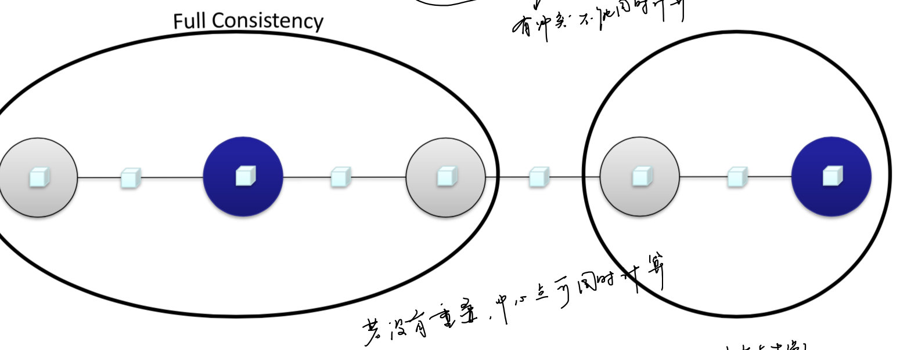

GraphLab简介
是一个以数据为中心的机器学习系统。
实际中很多模型都可以转化为图的形式：
- 社交网络
- 推荐系统
- 文本分析
- 概率图模型
我们之前已经有了基于BSP Model的Pregel，其主要特点是需要进行同步（双屏障），而同步是由最慢的节点决定，造成：
- 资源的浪费（大部分节点会等待少部分节点收敛）
- 某些算法可能并不需要同步更新
某些机器学习计算的特点
- 异步迭代（Asynchronous Iterative）
- 参数不一定需要同步更新
- 某些梯度下降算法可能不需要同步
- 动态计算（Dynamic Computation）
- 某些参数可能快速收敛
- 大部分顶点在很少的次数就已经收敛
- 在Pregel中可以通过设置inactive实现
- 可串行化（Serializability）
- 计算过程存在一定的顺序依赖关系，或者 顺序计算的效果(收敛速度、精确度)更
- 在有些特征的图中（线性/链式），用BSP会造成消息传输冗余
- 并行会造成计算量更大，传输消息更多
- 但也不能直接单线程执行
- 考虑事务，并发的运行过程等价于某种串行化的结果
- 应用场景
- 求最小值，最大值
- 马尔可夫过程/随机场
- BSP model中简化了这个问题，但可能影响迭代次数
因此，在GraphLab中，针对这三点分别进行了改进：
- 异步迭代
- Pull model
- Update function
- 动态计算
- Pull model
- 可串行化
- Scheduler
- Consistency Model
计算模型
UpdateFunction
与Giraph中的compute相似，需要：
- 当前节点的信息
- 邻居节点信息
最重要的不同点：
- 在Giraph中是节点主动发送消息，获取消息是一个被动的过程
- 而在GraphLab中，是主动拉去消息
Pull vs. Push Model
- Push model
- handle messages by pushing them from source vertices at the sender side to destination vertices at the receiver side
- Pull model
- handle messages by pulling them from source vertices on demand when destination vertices are updating themselves
哪一个更好？
- 在Pull model中，想要计算，直接拉去消息即可，可用来实现异步迭代
Pregel vs. GraphLab
- 异步迭代
- Pregel:不支持，BSP模型是同步迭代
- GraphLab:通过pull model可以支持异步
- 动态计算
- Pregel:根据判定条件让某些顶点votetohalt，但是后续可能还会收到消息
- GraphLab:根据判定条件停止计算 updatefunction，不再pull消息
The Scheduler
决定了迭代中顶点处理的顺序
Consistency Rules
- Full Consistency
- 最强的一致性，但并发度很低
- 
- Edge Consistency
- 只对边和中心点进行一致性保证
- Vertex Consistency
- 只对顶点进行一致性保证
讨论
- GraphLab vs. DB transactions
- Consistency类似事务可串行化中的什么概念?
- Pregel vs. GraphLab
- BSP模型是哪种consistency?
- Pregel的vertex-centric编程模型服从vertex consistency model吗?